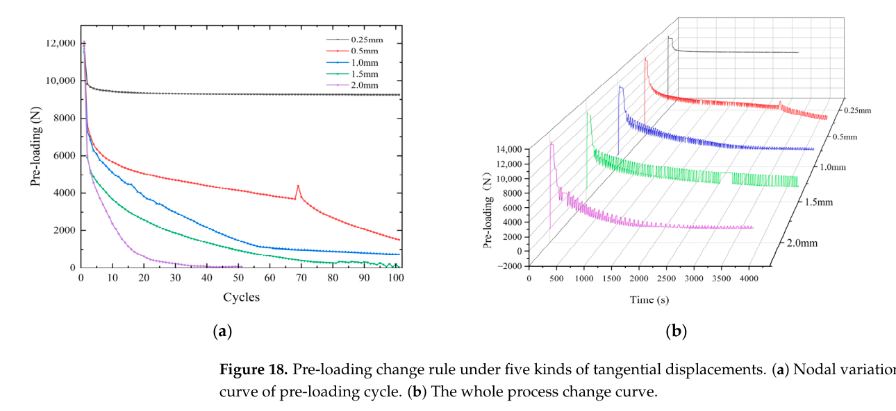
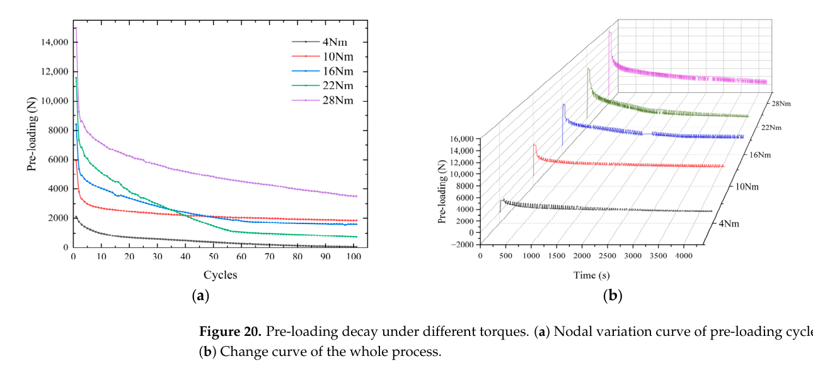

Lu 2024 — estudo de caso— case study
M8, varredura de torque de aperto (Sensors)M8, tightening-torque sweep (Sensors)
Figura do artigoPaper figure


Figura(s) originais do artigo (recorte do PDF) — a fonte dos pontos que foram digitalizados.Original figure(s) from the paper (PDF crop) — the source of the digitized points.
Condições do ensaioTest conditions
| ReferênciaReference | Lu et al. (2024). Sensors 24(11):3306 · doi:10.3390/s24113306 |
| ParafusoBolt | M8x1.25 |
| Pré-carga F0Preload F0 | 2–15 kN |
| AmplitudeAmplitude | ±0.25–2.00 mm |
| FrequênciaFrequency | 1 Hz |
| Família / nº de curvasFamily / curves | transverse · 13 |
| MAE medianomedian | 0.034 |
Informações do artigo — aparato, corpo-de-prova, matriz de ensaiosPaper information — apparatus, specimen, test matrix
Lu/Yang 2024 (Sensors) — M8 tangential pre-loading relaxation
Citation: Lu, Yang et al., "Prediction of Pre-Loading Relaxation of Bolt Structure of Complex Equipment under Tangential Cyclic Load", *Sensors* 24(11):3306 (2024). DOI: 10.3390/s24113306 (open access, CC BY; PMC11174751) PDF: pdfs_open_access/lu2024_sensors_M8.pdf (= BAS_V2_papers/A.../Prediction of Pre-Loading Relaxation...pdf)
Apparatus
- 50 kN electro-hydraulic servo fatigue testing machine (Xi'an make), software-controlled,
0.01–50 Hz capability; specimen plates held in machine fixtures, tangential (transverse) displacement applied between plates.
- Ring force sensor in the bolt stack for clamp-force measurement; zeroed before
tightening. Torque applied with a calibrated wrench; torque coefficient calibrated experimentally per grade/roughness (K ≈ 0.23–0.27).
- Clamped members: nickel steel flat plates, surface roughness variants Ra 0.8 / 1.6 / 3.2 µm.
Specimen
- GB/T 5783-2016 grade 8.8 M8 external hexagonal bolts (main series); companion
series with 8.8 internal-hex, 12.9 external-hex, 12.9 internal-hex for torque-coefficient calibration and comparison. Max allowable torque: 34.3 N·m (8.8), 44 N·m (12.9).
Trial matrix
| Sweep | Values | Fixed conditions |
|---|---|---|
| Tangential displacement amplitude (Fig 18) | 0.25 / 0.5 / 1.0 / 1.5 / 2.0 mm | 22 N·m (F0 ≈ 11.6–12.0 kN), ~100 cycles |
| Tightening torque (Fig 20) | 4 / 10 / 16 / 22 / 28 N·m (F0 = 2105 / 5963 / 8402 / 11567 / 15027 N) | fixed amplitude, ~100 cycles |
| Frequency | 1 / 3 / 5 Hz | (table-based curves in extracted_csv) |
| Plate roughness | Ra 0.8 / 1.6 / 3.2 µm | (table-based curves in extracted_csv) |
| Waveform | sine + others | studied for prediction model |
Digitized curves
| CSV | Figure | Condition | pts |
|---|---|---|---|
| lu2024_M8_fig18_amp0p25.csv | 18a | 0.25 mm | 9 (saturates at F/F0 ≈ 0.77) |
| lu2024_M8_fig18_amp0p5.csv | 18a | 0.5 mm | 17 |
| lu2024_M8_fig18_amp1p0.csv | 18a | 1.0 mm | 18 |
| lu2024_M8_fig18_amp1p5.csv | 18a | 1.5 mm | 15 |
| lu2024_M8_fig18_amp2p0.csv | 18a | 2.0 mm | 13 (dead by ~50 cycles) |
| lu2024_M8_fig20_T4Nm.csv | 20a | 4 N·m | 15 |
| lu2024_M8_fig20_T10Nm.csv | 20a | 10 N·m | 15 |
| lu2024_M8_fig20_T16Nm.csv | 20a | 16 N·m | 17 |
| lu2024_M8_fig20_T22Nm.csv | 20a | 22 N·m | 18 |
| lu2024_M8_fig20_T28Nm.csv | 20a | 28 N·m | 19 |
| lu2024_M8_fig14_amp0p25_long.csv | 14a | 0.25 mm, 22 N·m, half-sine, ~1040 ciclos | 289 |
| lu2024_M8_fig14_amp0p5_long.csv | 14a | 0.5 mm, 22 N·m, half-sine, ~610 ciclos | 203 |
| lu2024_M8_fig14_amp1p0_long.csv | 14a | 1.0 mm, 22 N·m, half-sine, ~185 ciclos | 118 |
> ## ⚠️ ERRATA 2026-07-31 (leitura do PDF, prova dupla) > > A fig20 roda a 1,0 mm, NÃO 0,5 mm: p.19 ("After 100 cycles of tangential > 1 mm displacement...") + Tabela 9 linha 22 N·m ≡ Tabela 8 linha 1,0 mm ao > dígito. Corrigido no registry em 2026-07-31; toda calibração anterior usava > metade do drive. Corolário: fig18_amp1p0 e fig20_T22Nm são o MESMO teste > publicado em 2 figuras (P2: deduplicado no censo). > > Fig. 14a digitalizada (New_Theory/digitize_lu2024_fig14.py, > auto-calibração por ticks + round-trip contra as âncoras da prosa: fim do > 0,25 mm lê 10511 vs 10539 N): 3 corridas LONGAS a 22 N·m — repetições > independentes das condições da fig18 com janelas 3–10×. Pisos de réplica > medidos (janela comum 0–100, interpolado): 0,25 mm MAE 0,096/σ 0,056 · > 0,5 mm MAE 0,283/σ 0,150 · 1,0 mm MAE 0,634/σ 0,159 — o scatter > espécime-a-espécime nas condições de colapso é da ordem da própria curva > (chapa mole + folga ⌀10/⌀8). F0 da fig14 = pico digitalizado por curva > (prosa: 12398/12285/12696 sem ordem declarada; picos lidos 2–4 % acima).
These replace/densify the coarse table-derived versions in extracted_csv/01_Lu_2024_* (4–9 pts each); the coarse ones remain valid as numeric anchors.
Digitization caveats
- Fig 18 normalized by the plotted initial value 12,000 N (2.0 mm curve by 11,600 N);
Fig 20 normalized by the Table F0 per torque. Reading error ±150 N (±0.01–0.07 in F/F0 depending on F0).
- Fig 18a red (0.5 mm) has a measurement artifact spike at ~69 cycles — not digitized.
- Massive first-cycle drop (e.g. 12,000→7,600 N in 3 cycles at 0.5 mm) is real (soft
nickel-steel plates, full-slip regime), not a digitization error.
- Curves run only to ~100 cycles.
- Round-trip against Table 9 (2026-08-16, all five fig20 curves): the *tails* are
excellent — the last reading matches the published c100 retention to ≤0.003 in all five (0.038/0.037 · 0.310/0.309 · 0.190/0.187 · 0.063/0.064 · 0.233/0.234), and c1/c10/c50 match to ≤0.004 in four of them.
- ⚠️
T4Nmdeviates mid-curve: atc50the CSV reads 0.232 against the
published 0.177 (+0.056); c10 is +0.008. Its c1 mismatch (0.880 vs 0.838) is not evidence — there is no point at x=2, so N=1 comes from interpolating across the cliff between 1.000 and 0.760, the same artifact already recorded for amp0p5/amp1p0 in lu2024_fig18_familia_tab8.md. No census consequence: T4Nm has been *declared out of scope since 2026-07-31*, on the paper's own statement that 4 N·m "does not reach the tightening effect".
- ⚠️ The non-monotone terminal retention of fig20 is REAL and PUBLISHED, not a
digitization artifact: Table 9 gives 0.037 / 0.309 / 0.187 / 0.064 / 0.234 for 4/10/16/22/28 N·m, and p.19 explains the mechanism (a loss-minimising torque near 10 N·m). Do not "fix" it. Detail: New_Theory/lu2024_fig20_nao_monotonia_e_fisica.md.
V2 calibration mapping
- Widest amplitude sweep in the base (0.25–2.0 mm):
k_wear_scale_tr+ amplitude scaling
(Phi_tr_correction).
- 0.25 mm case loses ~23% then saturates flat — the direct
slip_onset_Wanchor
(below-threshold regime).
- Torque sweep (F0 2.1→15 kN at fixed amplitude): preload dependence of loosening rate —
cross-condition constraint; note low-torque cases collapse to ~0.
- Huge stage-I drop →
k_emb_scaleupper range; member is soft nickel steel (unlike the
M16 steel-joint profiles).
Modelo vs dadoModel vs data
Cada card = uma curva digitalizada deste estudo: a linha é a previsão do modelo (config adotada, do store canônico) e os pontos são o dado medido; o badge traz o MAE.Each card = one digitized curve from this study: the line is the model prediction (adopted config, from the canonical store) and the dots are the measured data; the badge shows the MAE.
ReprodutibilidadeReproducibility
Cada card tem ↓ CSV (modelo + dado da curva). Os CSVs digitalizados originais ficam em Models/CALIBRATION_AND_VALIDATION/curve_library/digitized_csv/; a curva do modelo vem do store canônico (config adotada por fonte). Para reproduzir localmente:Each card has ↓ CSV (curve model + data). The original digitized CSVs live in Models/CALIBRATION_AND_VALIDATION/curve_library/digitized_csv/; the model curve comes from the canonical store (adopted per-source config). To reproduce locally:
Ver também o guia de uso do programa e a metodologia.See also the program usage guide and the methodology.